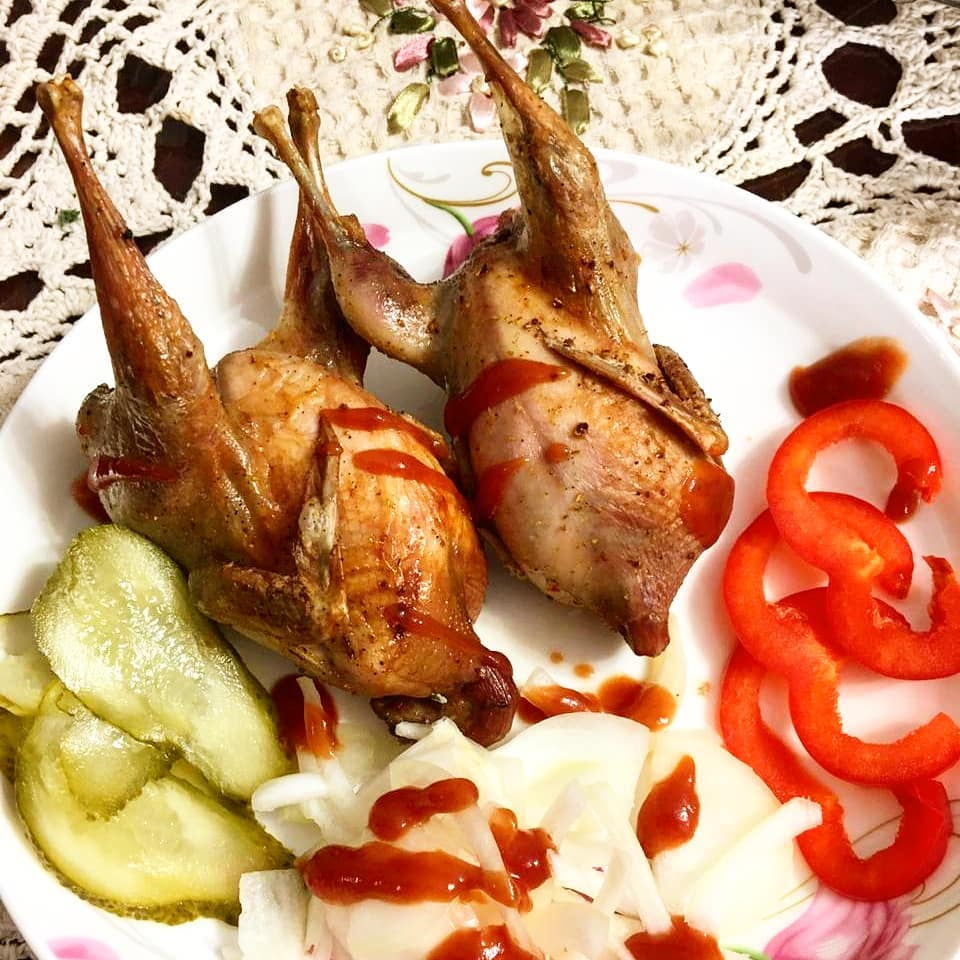
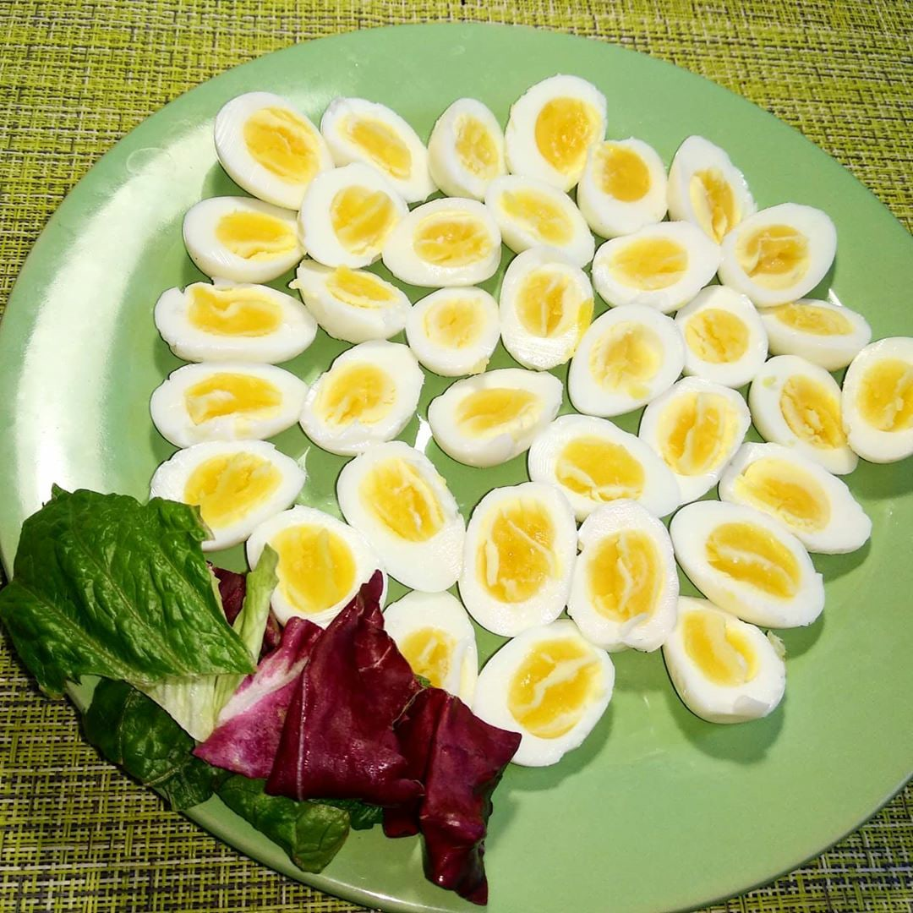

О пользе
 Употребление перепелиных яиц вкупе с диетическим питанием помогает укрепить иммунитет, восстановить и улучшить метаболизм. А благодаря высокому содержанию фосфора, перепелиное яйцо является хорошим стимулятором потенции. Детям перепелиные яйца стоит давать по 2-6 штук в день. Перепелиное мясо не перегружает работу ЖКТ, не создает большой нагрузки на поджелудочную железу, может стать отличным вариантом для правильного ужина, кто поддерживает идею ЗОЖ. Наличие в составе витамина Д в комплексе с витаминами группы В, способствует защите детей от развития такого заболевания, как рахит. Витамины группы РР, содержащиеся в перепелином мясе служат профилактикой от подагры. Исходя из состава мяса, а также пользы, которую несет для организма его употребление, специалисты однозначно считают, что перепелки гораздо полезнее куриного мяса. Продукт не имеет противопоказаний, не вызывает аллергической реакции и безвреден даже для детей младшего возраста. Противопоказанием к применению может считаться лишь индивидуальная непереносимость продукта.
Мы Домашняя Экоферма на Лосином острове.
У нас Вы сможете приобрести:
- перепелов Техасцев
- перепелов Фараонов
- перепелиные яйца
- перепелиное мясо
- инкубационное яйцо
- цыплят
- несушек
- клетки
- комбикорма